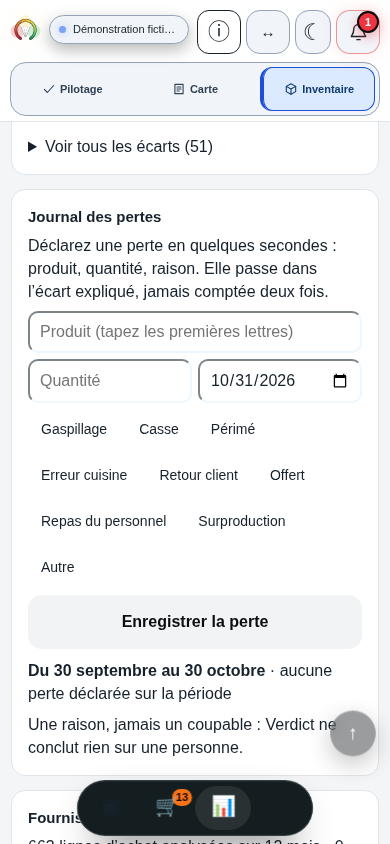

La quantité et son coût
Valeur au coût retenu
En attente d’une quantité et d’un coût valides.
Les couverts n’interviennent pas dans cette valeur. Le coût reste nécessaire même pour une quantité connue nulle ; son absence ne devient pas un prix nul.
Une quantité, son coût et son périmètre
Commencez par un produit ou une préparation, une période et une quantité nette avec sa méthode. La valeur au coût retenu et la masse rapportée à l’activité apportent deux lectures différentes. Gardez leur périmètre et leurs données manquantes pour examiner ensuite un changement.
Avant le total
Une mesure globale peut masquer le moment et le produit sur lesquels une action serait possible. Conservez ces six repères avec la quantité ; le calcul ne les vérifie pas.
Pour une valeur cohérente
Retrouvez un coût par kilogramme pour le même produit ou la même préparation, dans le même état que la masse retenue. Gardez la pièce, les postes inclus et la méthode de valorisation.
Un prix au kilogramme brut ne valorise pas automatiquement un poids net après préparation. Le prix d’un ingrédient isolé ne valorise pas un plat composé. Les conversions de rendement, de litre ou de pièce vers le kilogramme demandent une méthode explicite.
Le calcul ne convertit ni unité ni TVA. Le montant obtenu est une valeur selon le coût renseigné : ce n’est ni le prix de vente, ni une perte de chiffre d’affaires, ni une économie récupérable établie.
Pour une comparaison d’activité
Les couverts doivent porter sur la période et l’activité que vous rapprochez de cette quantité. Leur nombre n’est déduit ni du chiffre d’affaires ni des tickets.
La masse rapportée à ces couverts est un indicateur d’activité pour la mesure nommée. Elle n’est pas une portion physiquement perdue sur chaque assiette et ne couvre pas automatiquement tout le gaspillage de l’établissement. Une activité ou une répartition des ventes différente peut changer sa lecture.
Le coût n’intervient pas dans ce rapport physique. Une valeur monétaire et une masse par couvert répondent à deux questions ; l’une peut rester calculable quand les données de l’autre manquent.
Vos données, sans exemple fourni
Renseignez une quantité mesurée et les autres données établies. Le coût sert à la valeur ; les couverts, facultatifs, servent au rapport d’activité.
Un produit ou une préparation, dans le même état : masse nette mesurée en kg et coût correspondant en €/kg, selon vos pièces et votre méthode. Ce champ de quantité porte sur une mesure, pas une estimation. Couverts de la même période et activité. Aucun rendement, conversion d’unité ou de TVA n’est appliqué. Ce calcul de guide ne reproduit pas le formulaire du Journal natif.
Quantité positive ou nulle, jusqu’à trois décimales en kg ; coût positif ou nul, jusqu’à quatre décimales en €/kg ; couverts entiers positifs ou nuls. Quinze chiffres avant le séparateur par champ. Virgule ou point et espaces de milliers correctement groupés acceptés ; aucun signe moins, même sur zéro, ni signe plus ou exposant. Une précision excédentaire est refusée, sans arrondi de la saisie. Ce domaine ne certifie pas la précision de la balance ou de la pièce. Une masse négative appelle une vérification de mesure ou de tare ; son signe n’est pas supprimé.
Valeur au coût retenu = quantité en kg × coût retenu en €/kg.
Masse mesurée / couvert du périmètre = quantité en kg × 1 000 ÷ couverts, seulement si leur nombre est strictement positif.
Renseignez quantité et coût pour la valeur, puis une quantité valide et des couverts strictement positifs pour le rapport d’activité. Une donnée inconnue ne devient pas zéro.
La quantité et son coût
En attente d’une quantité et d’un coût valides.
Les couverts n’interviennent pas dans cette valeur. Le coût reste nécessaire même pour une quantité connue nulle ; son absence ne devient pas un prix nul.
La quantité et l’activité renseignée
En attente d’une quantité valide et de couverts strictement positifs.
Ce rapport est indépendant du coût. Il décrit cette mesure et ces couverts, sans portion individuelle ni couverture totale présumées.
Calculs exacts jusqu’à l’affichage : valeur au centime, masse par couvert au centième de gramme. Un seul arrondi final, les moitiés à l’écart de zéro. Les résultats ne sont pas plafonnés à la borne des saisies. Un affichage arrondi à zéro ou un coût connu nul ne prouve pas une quantité physique nulle.
Quand une donnée manque ou évolue
Coût absent ou invalide : le rapport par couvert reste disponible si quantité et couverts le permettent. Couverts absents, invalides ou nuls : la valeur reste disponible si quantité et coût sont valides. Une quantité absente ou invalide rend les deux sorties indisponibles, sans conserver leur ancienne valeur.
Pour comparer, gardez produit, catégorie, période, méthode, coût de référence et activité visibles. Un total plus élevé avec davantage d’activité et une évolution par couvert ne se lisent pas de la même façon. Les ventes, ruptures, changements de composition et autres conditions restent à examiner.
La quantité et le motif déclaré ne démontrent pas ce qui serait évitable. Une évolution après une action ne prouve pas à elle seule sa cause, un gain net ou un encaissement. Le travail et les autres coûts du changement comptent aussi.
Avant de conclure sur la valeur
Gardez un produit, une préparation ou une catégorie définie, avec moment, période, méthode et unité. Séparez ce qui n'a pas le même sens : préparation, invendu, retour, parties comestibles ou non comestibles, consommations hors vente. Les unités ne s'additionnent pas sans conversion documentée. Un offert ou un repas interne n'est pas automatiquement du gaspillage, et une absence de déclaration n'est pas une quantité mesurée nulle.
Retrouvez un coût par kilogramme correspondant au produit ou à la préparation, à son état et à la quantité mesurée, avec sa pièce et sa méthode. Un prix au kilogramme brut ne s'applique pas automatiquement à un poids net après préparation ; le prix d'un ingrédient ne valorise pas un plat composé. Ce n'est pas un prix de vente. Un coût absent ne devient pas zéro et aucune conversion de TVA n'est appliquée automatiquement. La valeur calculée reste une valorisation selon le coût retenu.
Elle rapporte la quantité retenue aux couverts renseignés pour une période et une activité comparables. Elle ne mesure pas la portion physiquement perdue sur chaque assiette ni tout le gaspillage de l'établissement. Si les couverts sont absents, invalides ou nuls, ce rapport est indisponible, sans supprimer une valorisation dont les données sont valides. Un coût inconnu ne supprime pas un rapport par couvert calculable. Un affichage arrondi à zéro ne prouve pas une quantité exacte nulle.
Elle ne suffit pas à l'établir. La quantité, son coût et son motif déclaré ne démontrent ni la cause ni ce qui serait réellement évitable. Une réduction peut aussi changer le travail, les ventes, les ruptures ou d'autres coûts. Comparez les mêmes périodes, activité, catégories et méthodes en gardant les autres changements visibles. Une évolution après une action ne prouve pas à elle seule que cette action l'a causée, ni qu'elle produit un gain net ou un encaissement.
Dans la référence examinée, le journal relie une déclaration à un produit, une quantité positive, une date et un motif. Ses motifs incluent des consommations hors vente ; toutes les lignes ne sont donc pas du gaspillage. Une déclaration peut expliquer une part du rapprochement matière sans soustraire une seconde fois la matière déjà consommée. La synthèse utilise un prix produit enregistré strictement positif. Vérifiez aussi l'unité et le périmètre avant d'interpréter cette valeur. Le journal ne pèse pas automatiquement et un motif déclaré ne démontre pas une cause.
Le Journal natif de Verdict
Dans la référence examinée, le journal de pertes d’Inventaire → Analyse relie une déclaration à un produit existant, une quantité strictement positive, une date valide et un motif choisi. Les motifs comprennent aussi des consommations internes : toutes les lignes ne sont pas du gaspillage.
Ces déclarations participent aux mouvements expliqués du rapprochement entre consommation réelle et théorique. Elles peuvent expliquer une part de l’écart ; elles ne soustraient pas une seconde fois la matière déjà consommée. Tout écart matière n’est pas du gaspillage.
La synthèse utilise un prix produit enregistré strictement positif. Vérifiez aussi l’unité et le périmètre avant d’interpréter cette valeur. Un prix absent ou un conflit entre unités renseignées n’est pas une valeur connue nulle. Le journal ne pèse pas automatiquement, et le motif déclaré ne démontre pas une cause.
Le calcul de ce guide explicite kg, €/kg et couverts. Ses zéros connus et ses deux lectures ont un autre domaine que la déclaration native ; ils ne prouvent pas que le journal accepte une quantité nulle ou valorise un prix nul.
Relier une déclaration au rapprochement matière
La référence applicative examinée
Formulaire natif de la démonstration fictive Brasserie Collet, référence figée f05567b. Produit et quantité sont vides ; la date proposée est le 31 octobre 2026. Les neuf motifs comprennent Offert et Repas du personnel : tous ne désignent pas du gaspillage. Cette vue ne prouve ni pesée, ni soumission, ni valorisation.
Les commandes flottantes et leur léger recouvrement natif sont conservés. Aucune nouvelle déclaration n’a été saisie ni soumise ; cette vue ne démontre ni enregistrement réussi ni économie.
Capture intacte du 30 octobre 2026 à 23:24 UTC, soit le 31 octobre à Paris. Référence figée f05567bda30d38357d778263db64d8318c5767b4. La preuve porte sur ce formulaire ; elle ne valide pas l’ensemble de Master2.
Agrandir avec la légendeVotre prochaine vérification
Conservez le produit ou la préparation, son état, le moment, la quantité et sa méthode. Retrouvez le coût correspondant si une valeur est utile, et le périmètre des couverts si vous comparez l’activité.
Choisissez ensuite la pièce ou le fait qui manque pour examiner un changement. La valeur calculée ne décide pas seule de l’action ni de ce qui pourrait être économisé.
Préparer un changement et sa vérificationPoursuivez selon la mesure, le rapprochement ou le changement à préciser.